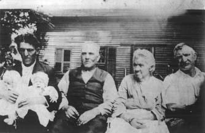
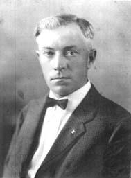
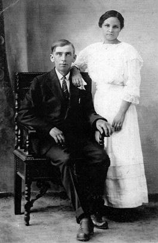
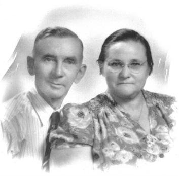
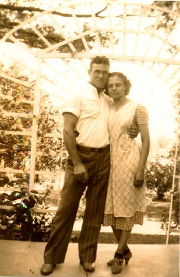
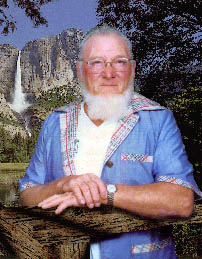
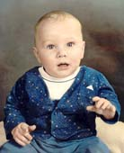
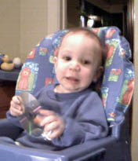

| Follow the above link to the main page for this topic or click the graphic below to visit the Homepage. |
 | Photo Gallery: Betsy Cullen and Family The Cullen Family History Collection |
 |
This photo was taken around 1915, probably at the family farm in Castalia, Ohio. The elderly woman is Betsy Cullen, wife of Enos Cullen (who d.1870). To the left of her is her son Charles and at the right edge is her other son John. The third man is William Earnest, son of Charles. William is holding his twin sons, Lester and Lloyd. Lester Cullen has just passed away on January 18,1999. He was 81. Photo courtesy of the Cullen descendants of John W. Cullen in Castalia, Ohio. Back Button to Return. |
 |
Of all the characters in my family tree, this gentleman is perhaps the most notorious. James Henry Cullen, known by all as 'One Arm Jim', was also known for his love of drink (much to the consternation of his family). Despite this, I have come to know him as a tough old buzzard, outworking his fellows who had two good arms to his one. He was a very generous man and was often known to go out of his way to help those in need. It was a sad episode in the Cullen family when his vice finally got the best of him. He died in 1960 at the age of 72. Regardless of the opinions of many, he is perhaps the most recognized individual in the early families and certainly missed by all. Back Button to Return. |
 |
Grace Cable was first married to James H. Cullen (Ol' One Arm pictured above) but their marriage ended in divorce. They had two children. One Arm Jim married again, this time to Gertrude Evans and no children but another divorce resulted from that marriage. Grace also remarried and her new husband was August Lawrence Stencel, pictured here with his wife Grace. It is interesting that this was the first of a two-generation connection to the Stencel family. My Grandfather (son of One Arm and Grace) married a Stencel, the daughter of one of Lawrence's brothers. August died in 1951 in Sandusky. In his last years he was a houseman at Hotel Rieger. Below is a later photo of August & Grace Stencel. Back Button to Return. |
 | |
| My Grandparents: Carl J. & Grace A. Cullen A recently acquired photo of my grandparents before they were married. The date is uncertain but was certainly from the late 1930's. Photo courtesy of my Aunt Doris. | ||
| Carl J. Cullen 1912 - 1981 |  | Grace A. Cullen 1916 - 2002 |
 |
James Carlton Cullen Senior, otherwise known as Carl J. Cullen, was my Grandfather. He was born on October 17, 1912 to James and Grace (Cable) Cullen. On October 5, 1940 he was married to Grace A. Stencel (Dec 18, 1916 - Feb 4, 2002) and they had five children, my father among them. James C. Cullen Sr., known by his friends as "Mike", died October 18, 1981 at the age of 69 and was buried in Castalia Cemetary in Castalia, Ohio. His marker is not found with the rest of the Cullen family but is in another section of the cemetary where relatives of his stepfather, August Stencel, are buried. Back Button to Return. |
| The children of James and Grace (Stencel) Cullen. My father, James C. Cullen Jr., is the one at the very right. Back Button to Return. |
 |
 |
On to the greenest branches. On the left is yours truly - but more importantly - on the right is the newest addition. That's my son, Brandon, and his generation is the eleventh documented generation in our Cullen family tree. Back Button to Return. |
 |